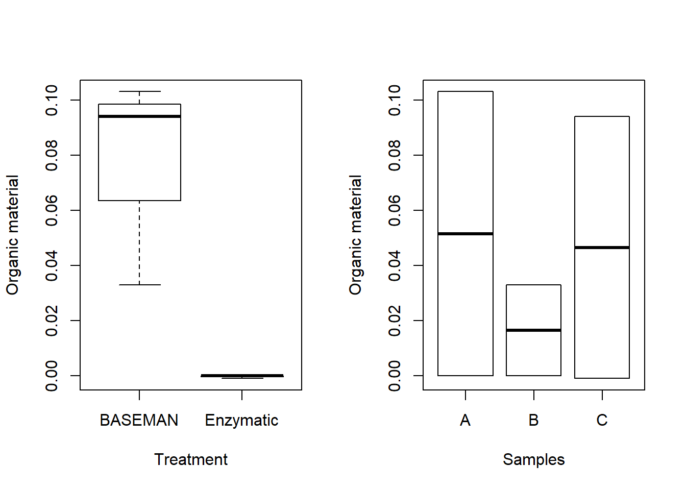
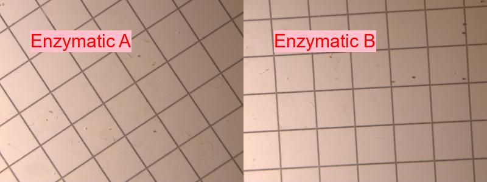
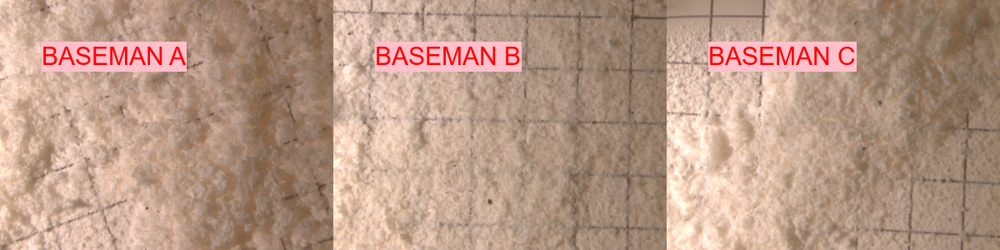

Chapter 3 Comparison of Enzymatic purification and GESAMP protocol
Replication of the methods from the article: Enzymatic Purification of Microplastics in Environmental Samples.
To perform this comparison study samples A, B and C from sample trip 909 were divided in two treatments; the BASEMAN (see above) and Enzymatic treatment (without the density separation step).

| Treatment | Sample | Debris before (g) | Debris after (g) | Digestion Efficiency (%) |
|---|---|---|---|---|
| Enzymatic | C | 1.427 | -0.001 | 100 |
| Enzymatic | B | 1.275 | 0.000 | 100 |
| Enzymatic | A | 1.383 | 0.000 | 100 |
| BASEMAN | C | 1.588 | 0.094 | 94 |
| BASEMAN | B | 1.283 | 0.033 | 97 |
| BASEMAN | A | 1.503 | 0.103 | 93 |
3.1 Images
The debris left over from the enzymatic approach is acceptable for the Raman spectroscopy with a particle finder.

